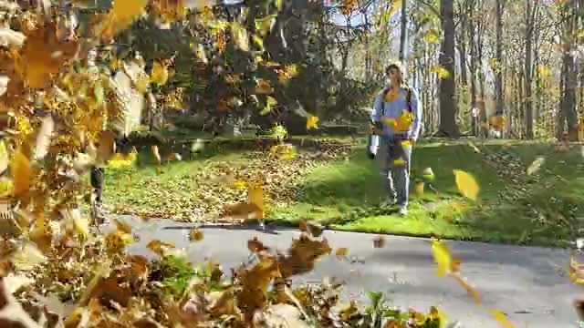
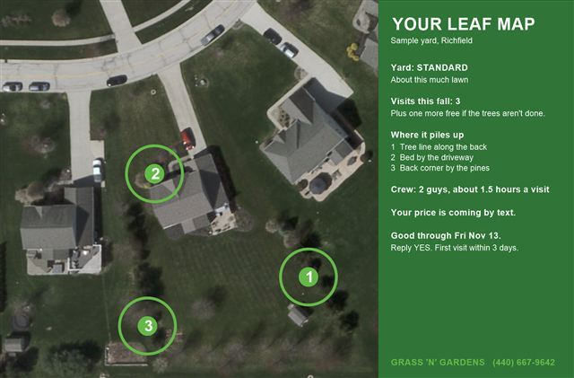
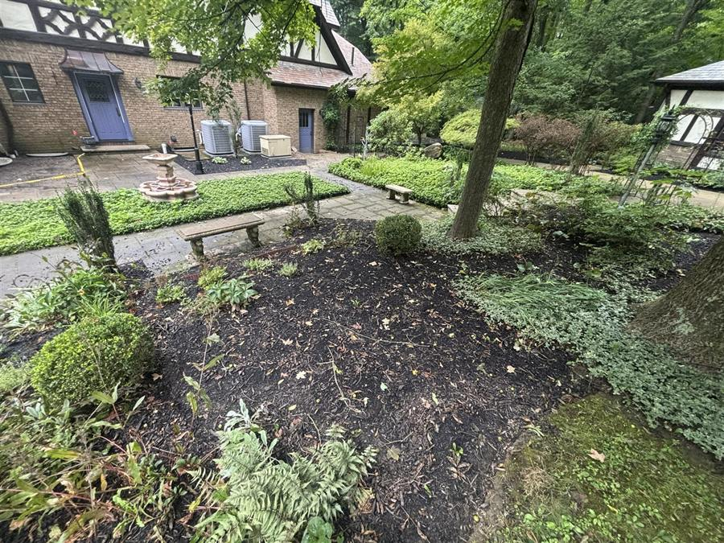
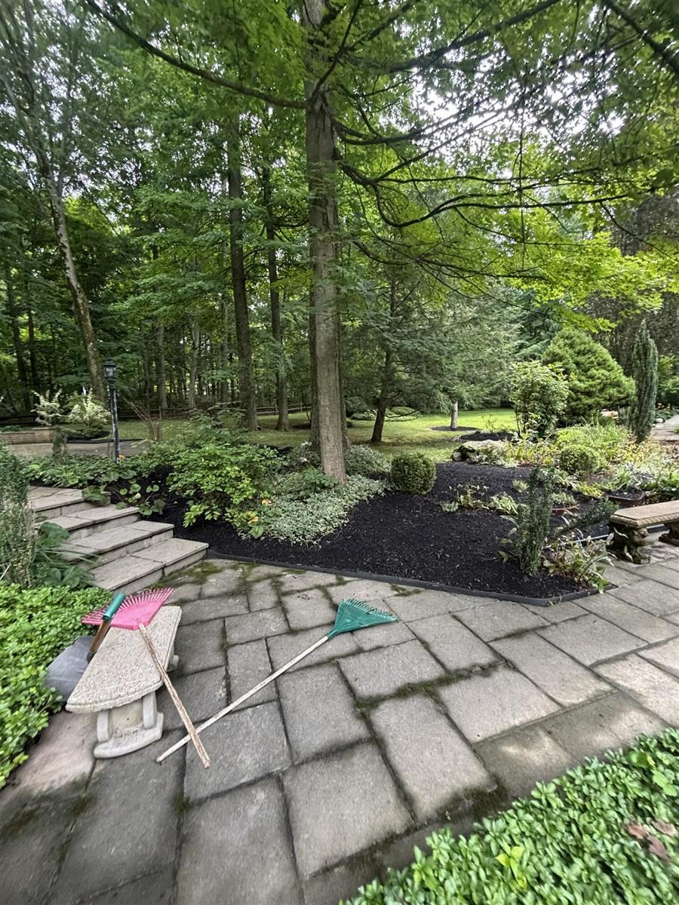
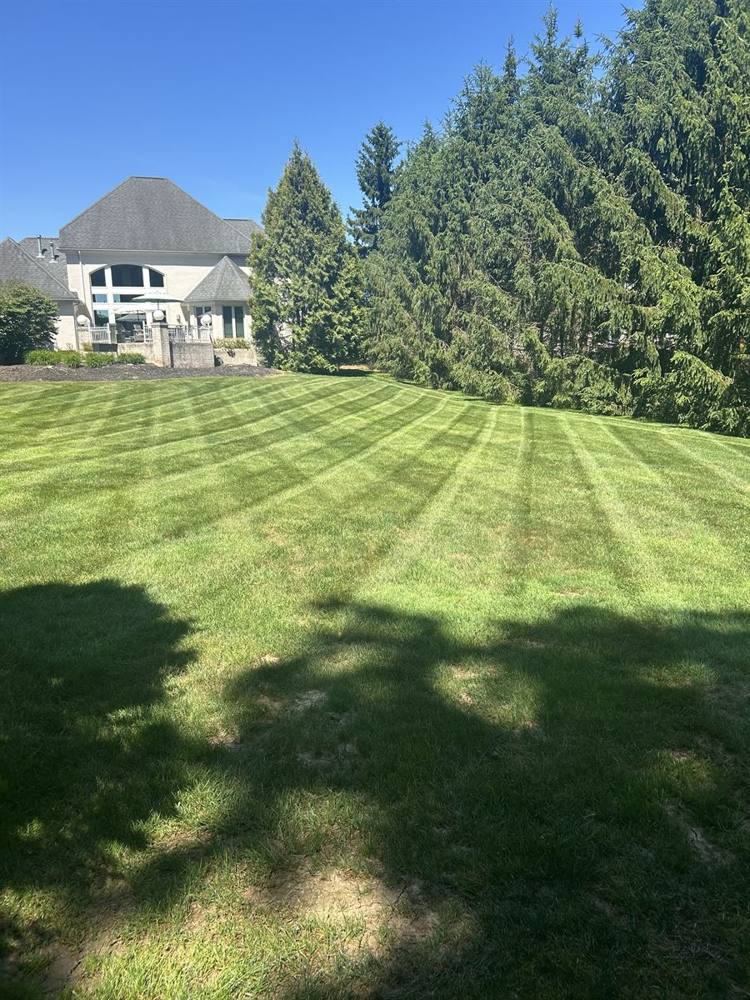
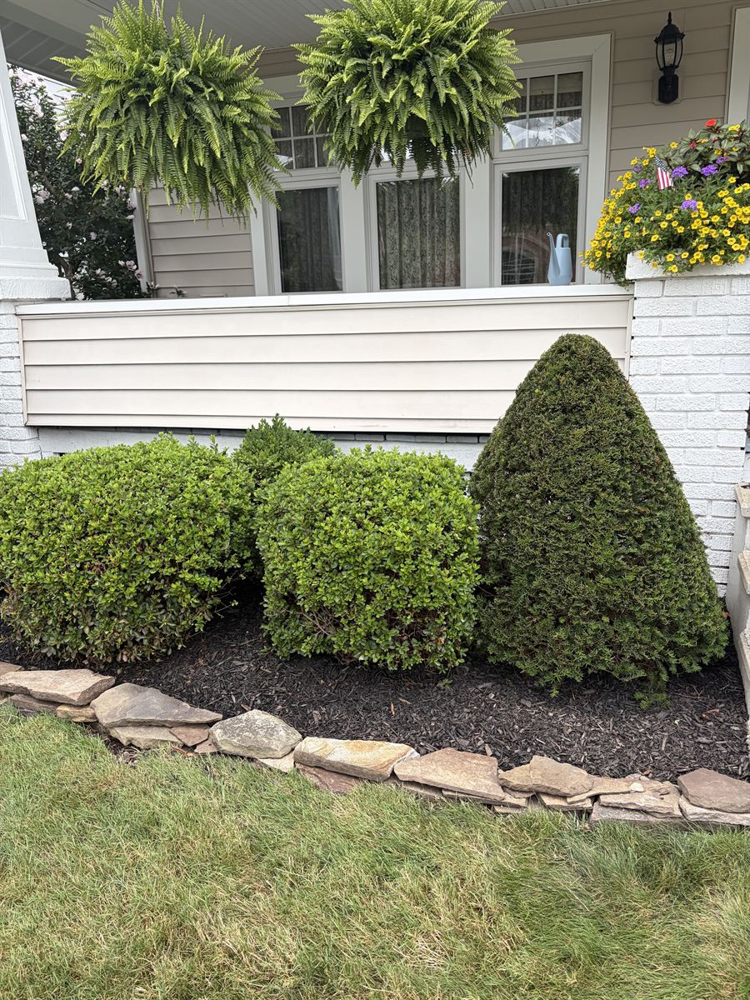
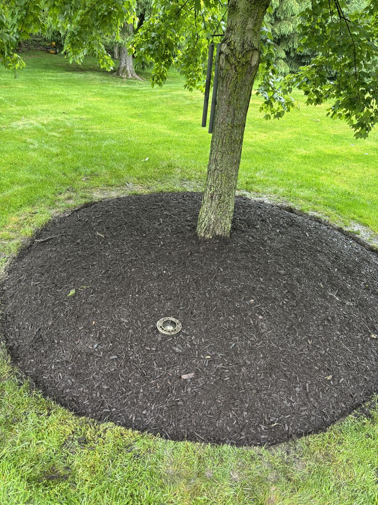
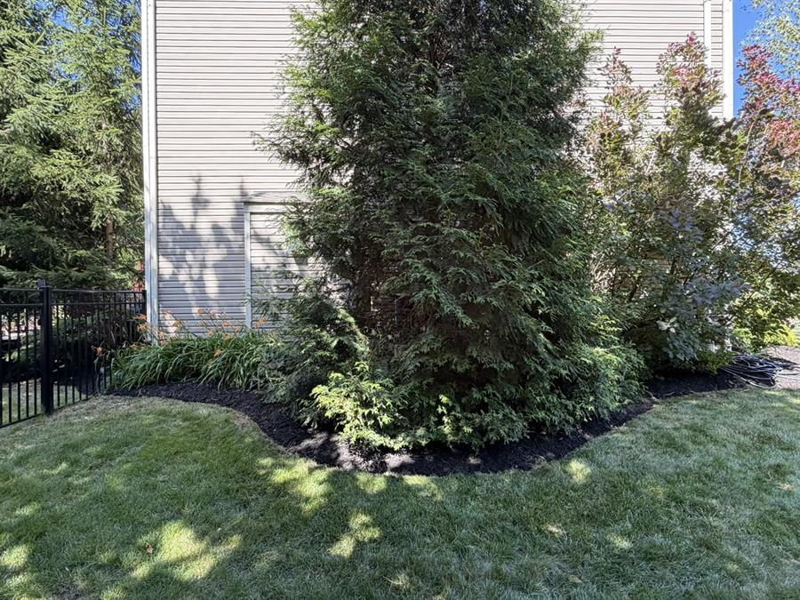

The usual cleanup
- We come once.
- Two weeks later your yard's covered again.
- You call and wait for the next trip.
- You pay for every trip.


Fall Pass. This leaf season.
Richfield, Ohio
Leaves gone every time. Proof every visit.
Book by Fri Nov 13. First visit within 3 days.
Free. Nothing to buy until you say yes. Text your address. Harrison texts back your Leaf Map and price within 24 hours.
Grass 'n' Gardens clears leaves in Richfield and nearby towns. With the Fall Pass, you pay a set number of visits for your yard, plus one more free if the trees aren't done. A photo every visit.
Free, by text
Text me your address. Within 24 hours I text back a map of your yard: how many visits it needs and what each one costs. No call, and nothing to buy until you say yes.

Why it mattersOhio State says leaves shouldn't sit on grass for more than two weeks. The grass under them gets weak and yellow.


Fall cleanup. One visit. Beds cleared, leaves gone, walk blown clean.
Miss one? Text us. We're back the next day, for free. If it rains, the next dry day. Text (440) 667-9642
Grass N Gardens did an outstanding job transforming my yard. These young gentlemen removed a massive amount of debris, including an entire trailer load of thorn bushes, tree branches, old leaves, and mulch. They were professional, hardworking, and incredibly efficient from start to finish. The entire cleanup was completed much faster than I expected, and the difference is unbelievable — my yard feels cleaner, larger, and completely refreshed. Super fair price as-well! Their attention to detail and work ethic really stood out. I highly recommend Grass N Gardens to anyone looking for a reliable team.
Questions
Don't see yours? Text Harrison. He texts back from his own phone.
Text HarrisonAs soon as the leaves start coming down. Ohio State says leaves shouldn't sit on grass for more than two weeks, or the grass under them gets weak and yellow. Text your address and you'll get your Leaf Map within 24 hours, with how many visits your yard needs.
It depends on your yard. Small yards with a few trees take 2. Wooded lots take 4. Your Leaf Map tells you the number, and if the trees aren't done we come back once more, free.
Yes. If you're not happy after the first visit, you can cancel and get the rest back.
If snow shuts it down, your last trip moves to your spring cleanup. See spring cleanups
It depends on your yard and how many trees you have. Send us your address and Harrison texts you the price within 24 hours. Get my Fall Pass price
Yes. The leaves leave with us in the trailer. No bags at the curb and nothing extra to pay. Hauling is part of the Fall Pass from Grass 'n' Gardens in Richfield.
Both. We blow the leaves off the lawn and out of the beds, then blow the walks and the drive clean. We don't do gutters.

Same day every week. We edge and blow off the drive every time.
See how it works
Sticks and dead leaves gone before your first mow.
See how it works
We pull the weeds first. Then fresh mulch and a sharp edge.
See how it works
New plants and tired beds redone. The right plant in the right spot.
See how it worksFree, by text
Text me your address. Within 24 hours I text back a map of your yard: how many visits it needs and what each one costs. No call, and nothing to buy until you say yes.
I look your yard up and walk it myself, then write out your whole year. You never have to come outside or be home. Want to walk it with me? Just ask and I will. You get it in a day and it's yours to keep, even if you stay with the guy you have now.
(440) 667-9642